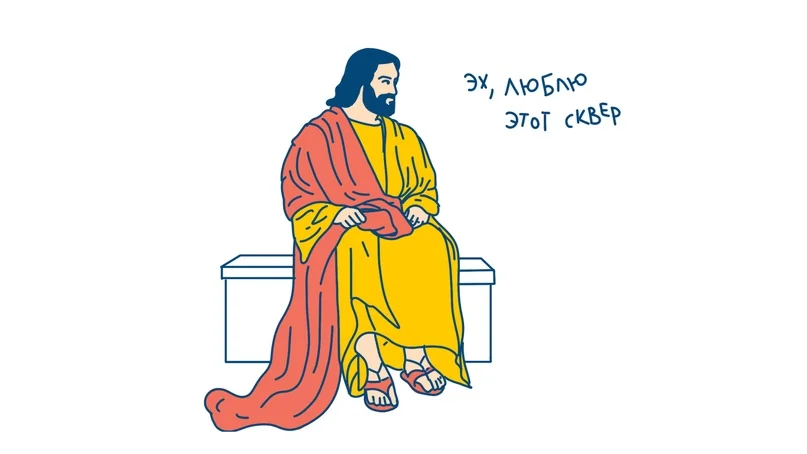

Данила Блюз придумал, как примирить горожан с постройкой храма в очередном сквере

Удивительное дело — оказывается, наши граждане не любят храмы! Это выяснилось благодаря городу Екатеринбургу: там уже десятый год не знают, куда притулить храм святой Екатерины. Где только ни пытались его построить — горожанам все не нравится! Они зарубили даже проект постройки храма на воде, а ведь там не ходят мамаши с колясками и не катаются велосипедисты.
Не пришли екатеринбуржцы в восторг и когда их поставили перед фактом, что храм будет возведен в центре их любимого сквера. Неделю длились протесты и перетягивания забора, кому-то пробили голову, кого-то облили черемухой, а потом, как всегда случается в сложной неразрешимой ситуации, пришел Путин и сказал: «Давайте все-таки спросим жителей города, нужен им этот храм в сквере или нет? И пусть меньшинство подчинится большинству!” Спросили. И оказалось, что большинство против храма в сквере. А потом решили вообще у всех россиян узнать, нужны им эти храмы или нет. Выяснилось, что и остальной России столько храмов ни к чему.
Оно и понятно, 70 с лишним лет мы жили в атеистическом государстве, гнали бога отовсюду, потешались, смеялись над ним, а теперь этот бог приходит и заявляет свои права на наши любимые парки и скверы, где мы привыкли пить пиво и драться, пока дети прыгают в надувном замке.
Точнее, даже не сам бог приходит, а какие-то его сомнительные представители. Думаю, если бы господь снизошел на екатеринбуржцев, восседая на грозовом облаке, в сонме ангелов и серафимов, и для острастки испепелил пару протестующих, то никаких вопросов у граждан по поводу сквера уже не возникло бы. А так заявляются какие-то ушлые дядьки в рясах с рулетками, че-то там себе замеряют, а потом говорят: «Отлично, берем! Завтра здесь будет храм!»
Ясное дело — народ негодует. Народу хочется погулять, подышать воздухом, посидеть на лавке под сенью дерев, а эти дерева постоянно вырубают и землю вокруг закатывают асфальтом для очередной парковки, торгового центра или храма. Особо не разгуляешься.
Патриарх Кирилл недавно встретился с Путиным и похвалился, что РПЦ строит по три храма в день. На месте патриарха я бы поостерегся таких грандиозных построек. У нашего бога на протяжении всей истории очень сложные отношения с архитектурой и всяким рекордным зодчеством. То он ломал золотых тельцов, которых строили заблудшие евреи, то на вавилонской башне всех перессорил, то башни-близнецы 11 сентября…
В общем, любит бог ломать что-нибудь грандиозное, чтобы человек не забывал, какое он говно. Мало ли, вдруг в один момент он скажет: «Ого, православные на Руси совсем нюх потеряли! Всю страну храмами заставили, некуда Макдоналдс воткнуть. Это какая-то совсем охреневшая гордыня, щас взорву лазерами из глаз все к такой-то матери!»
Сами посудите, как тут господу нашему не охренеть? Три храма в день: получается, что в год выходит 1095 храмов, а за десять лет — 10 950. Для сравнения, супермаркетов «Магнит» по всей России 13 с мелочью тысяч. Но у «Магнита» паства неиссякаемая. Пусть бросит в меня камень тот, кто ни разу ничего не покупал в «Магните»! Тогда как храмы посещает значительно меньше народу и политика шаговой доступности тут совершенно ни к чему.

В итоге что мы имеем? Парки и скверы оккупируют совершенно бесполезные сооружения, которые не просто никто не посещает, но они, как выяснилось, еще и раздражают людей. Что же делать? Как и господа не прогневать, и людям угодить, и храмов построить побольше?
Спокойно, ребзя, Данила все придумал. Смотрите: че там в храме делается целый день? Немного помолятся, немного исповедуются, повенчают кого, кого отпоют и так далее, по мелочи. В остальное время храм стоит без дела. Это самое время я предлагаю использовать на нужды мирские: организовать православный фастфуд. Чтобы в пост, например только рыбные наггетсы и креветки в кляре.
Ну или, черт с ним, франшизу у Макдоналдса взять или у KFC. Пусть работают, пока храм простаивает. Вы видели, чтобы хоть кто-то выступал против открытия нового KFC? Нигде такого не было! Наоборот, на запах жаренной курочки прихожане сами потянутся. Можно какие-нибудь совместные акции организовывать: «всем простоявшим всенощное бдение пати баскет бесплатно!», «исповедуйся и получи большую картошку фри».
Многие жители переживают из-за колокольного звона по утрам в воскресенье. Можно сделать так, чтобы этот звон возвещал еще и о начале продажи завтраков. Люди приходят за свеженьким макмаффином, а заодно и заутреню послушали, духовно возвысились, стали ближе к богу.
Церковный хор, например, в свободное время можно использовать для исполнения популярных хитов. На службе они псалмы поют, а в остальное время могут подшабашить и попеть что-нибудь из репертуара Леди Гаги или Ланы Дель Рей. Простор для коллабораций просто безграничный! Пора перестать делать из храмов анклавы уныния посреди города.
Особо начитанные мне возразят, что Христос, мол, в свое время прогнал из храма торговцев, всех побил, проклял и велел никогда не осквернять торговлей «дом отца его». Ну так то ведь когда было? И чем там торговали? Если бы он попробовал макмаффин или крылышки из KFC, то наверняка никого бы не стал прогонять и впредь умножал бы на проповедях не рыбу с хлебами, а чизбургеры с картошкой фри.